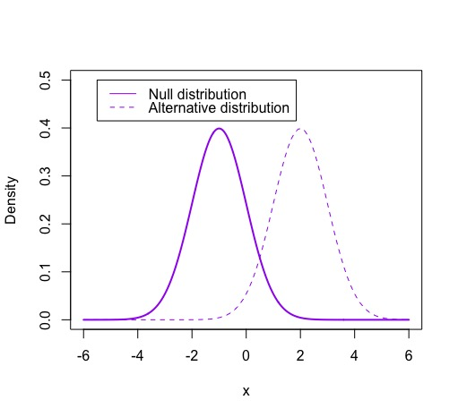
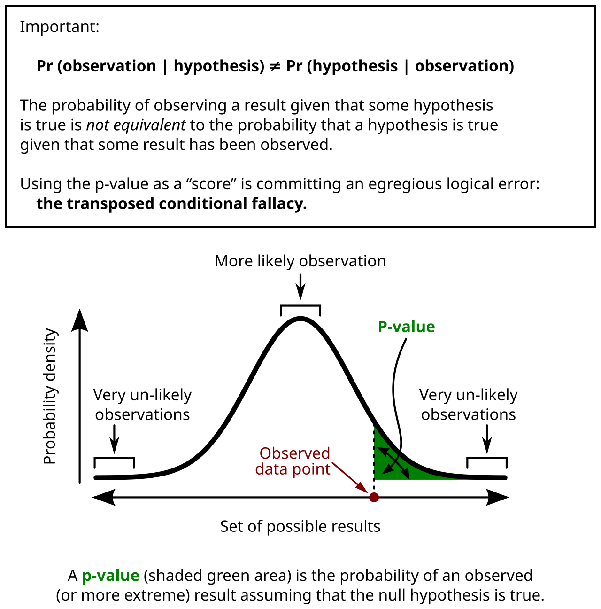
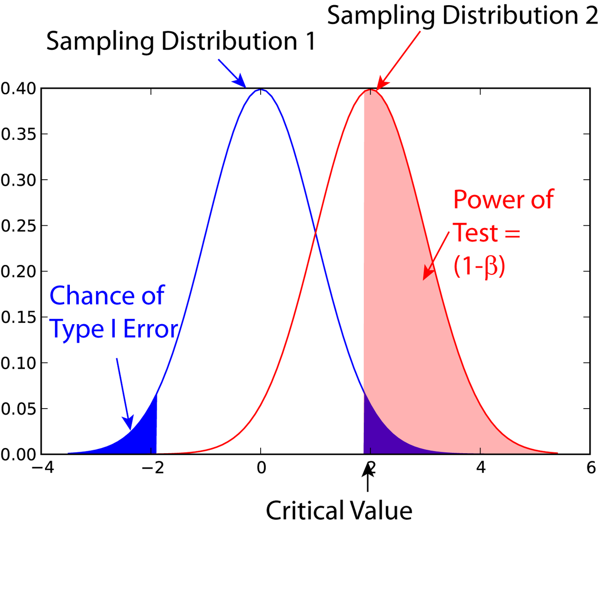

The Logic of Hypothesis Testing
Every interesting result comes with a nagging question: could that have happened by chance? A hypothesis test is a formal, honest way to answer it. You write down the boring explanation, you ask how surprising your data would be if that boring explanation were true, and you let the answer guide — not dictate — your decision. The machinery is simple arithmetic, but the reasoning is where students get lost, and where careless researchers publish nonsense. This chapter is about the reasoning: what a null hypothesis really claims, what a p-value really measures, what it emphatically does not measure, the two ways a test can be wrong, and why a "significant" finding can still be worth nothing at all.
By the end of this chapter you can
- State a null hypothesis and an alternative hypothesis correctly, in terms of population parameters.
- Choose between a one-tailed and a two-tailed alternative, and explain why the choice comes before the data.
- Define the p-value as a conditional probability, and compute one from a test statistic.
- Name the three or four things a p-value is routinely and wrongly claimed to mean.
- Apply a significance level (α) to reach a decision, and use the language reject / fail to reject precisely.
- Distinguish a Type I from a Type II error, and compute the power of a simple test.
- Explain how sample size drives p-values, and why huge studies find trivial effects "significant."
- State and check the assumptions a test rests on, and explain why a p-value is conditional on those too.
- Report a result using an effect size and a confidence interval, and interpret that interval correctly.
- Explain why a significant result does not by itself establish causation.
Section 1Null and alternative hypotheses

The courtroom, and why we start with the boring explanation
A hypothesis test is built like a criminal trial. The defendant is presumed innocent; the prosecution must produce evidence strong enough to overturn that presumption. In statistics, the presumption of innocence is called the null hypothesis, written H0. It is always the dull, no-news, nothing-special explanation: the drug does nothing, the two groups are the same, the coin is fair, the population mean is exactly what everyone has always said it is.
Against it stands the alternative hypothesis, written Ha (some books write H1). This is the claim you actually care about — the drug helps, the groups differ, the coin is loaded, the mean has shifted. Notice the asymmetry: the burden of proof sits entirely on Ha. If the evidence is weak, we do not conclude that H0 is true; we simply say the prosecution failed. That asymmetry is the single most important idea in this chapter, and Section 3 returns to it.
Writing them correctly: four rules
Most errors in stating hypotheses are mechanical, and four rules fix nearly all of them.
Rule 1 — hypotheses are about parameters, never statistics. A hypothesis is a claim about the unknown population: μ (a population mean), p (a population proportion), σ (a population standard deviation), or the difference between two of those. It is never a claim about x̄ or the sample proportion p̂, because you can see those — there is nothing to hypothesize. Writing "H0: x̄ = 20" is like hypothesizing about a number already printed in front of you.
Rule 2 — the equals sign lives in H0. The null must pin the parameter to one specific value, because that value is what lets us build a probability model and compute anything at all. So H0: μ = 20, never H0: μ ≠ 20.
Rule 3 — H0 and Ha must not overlap. Together they should cover the possibilities without both being true at once: μ = 20 versus μ ≠ 20, or μ ≤ 20 versus μ > 20.
Rule 4 — the direction is chosen before you look at the data. A two-tailed (two-sided) alternative, μ ≠ 20, says "different in either direction." A one-tailed (one-sided) alternative, μ > 20 or μ < 20, says "different in this specific direction," and it is only legitimate when the direction was decided in advance for a substantive reason — and when a difference in the other direction would be of no interest whatsoever. Peeking at the data, noticing the sample mean came out high, and then declaring a one-tailed test is a way of quietly doubling your chance of a false positive. When in doubt, go two-tailed.
| Research question | H0 | Ha | Tails |
|---|---|---|---|
| Is the mean commute still 20 minutes? | μ = 20 | μ ≠ 20 | Two |
| Does the new curriculum raise scores above the old mean of 72? | μ ≤ 72 | μ > 72 | One (upper) |
| Is the defect rate below the promised 3%? | p ≥ 0.03 | p < 0.03 | One (lower) |
| Do two teaching methods differ in mean score? | μ1 − μ2 = 0 | μ1 − μ2 ≠ 0 | Two |
| Is the coin fair? | p = 0.5 | p ≠ 0.5 | Two |
Setting up a real one
A transit office states that the mean one-way commute for students at a large institution is 20 minutes. You suspect it has crept upward, but you would also want to know if it had dropped, so you go two-tailed. You survey a random sample of n = 36 students and find x̄ = 22.4 minutes with s = 6.0 minutes.
The hypotheses, in the population's language, are
H0: μ = 20 minutes versus Ha: μ ≠ 20 minutes.
Your sample came out 2.4 minutes high. That by itself proves nothing — samples wobble. The question the rest of this chapter answers is: if the mean really were 20, how often would a sample of 36 wobble this far? We carry this example through Sections 2, 3, and 4.
- H0 is the no-effect, no-difference explanation; Ha carries the claim and the burden of proof.
- Hypotheses are statements about parameters (μ, p, σ), never about sample statistics.
- The equality goes in H0, because a specific value is what makes the probability calculation possible.
- Choose one-tailed vs two-tailed before seeing the data; when unsure, use two-tailed.
Section 2The p-value

What it actually measures
Assume, for the sake of argument, that H0 is true. Under that assumption the sample statistic has a known sampling distribution — a predictable pattern of wobble. The p-value is the probability, computed inside that assumed world, of getting a result at least as extreme as the one you actually got.
Written as a conditional probability:
p = P( a test statistic at least this extreme | H0 is true and the model's assumptions hold )
Read the vertical bar as "given." Everything to the right of it is assumed, not concluded. A small p-value means your data would be a rare event in the null world, which is grounds for doubting the null world. A large p-value means your data are perfectly ordinary there — unsurprising, and therefore uninformative.
Computing one, step by step
Back to the commutes: H0: μ = 20, Ha: μ ≠ 20, with n = 36, x̄ = 22.4, s = 6.0.
Step 1 — standard error. The typical wobble of a sample mean is
SE = s / √n = 6.0 / √36 = 6.0 / 6 = 1.00 minute.
Step 2 — test statistic. Measure the gap between what you saw and what H0 predicted, in units of that wobble:
t = (x̄ − μ0) / SE = (22.4 − 20) / 1.00 = 2.40, with df = n − 1 = 35.
Your sample mean sits 2.40 standard errors above the null value.
Step 3 — tail area. On a t distribution with 35 degrees of freedom, the area beyond t = 2.40 in one tail is about 0.011. Because Ha is two-sided, "at least as extreme" includes results 2.40 SEs below 20 as well, so we double it:
p ≈ 2 × 0.011 = 0.022.
Step 4 — say it in English. If the true mean commute really were 20 minutes, then about 2.2% of random samples of 36 students would land at least 2.4 minutes away from 20 in one direction or the other. Our sample is in that unusual 2.2%. That is real, but not overwhelming, evidence against μ = 20.
What that calculation assumed
Every number above is conditional on a set of assumptions, and a one-sample t test has three that you are obliged to state and check before reporting anything:
- Random sampling. The 36 commuters were drawn at random from the population the conclusion is about. A convenience sample breaks the link between the sampling distribution and reality, and no amount of arithmetic repairs it.
- Independence. One person's commute tells you nothing about another's. Sampling 36 people who carpool together, or surveying the same person repeatedly, violates this and makes the standard error too small.
- Approximate normality of the sampling distribution. Either the population of commute times is roughly normal, or n is large enough for the Central Limit Theorem to do the work. At n = 36 the t procedure is reasonably robust, but a strongly skewed population or a visible outlier — a single three-hour commute — can distort both x̄ and s. Plot the data before you trust the p-value.
The same three conditions carry through Sections 3, 4, and 5. When σ is known and used in place of s, as in the power calculation of Section 4, the test statistic becomes a z rather than a t, but the sampling, independence, and shape requirements are unchanged.
Four things a p-value is not
These misreadings are so common that they appear in press releases, textbooks, and published papers. Learn them as a list of things you will never say.
| People say | Why it is wrong | What is actually true |
|---|---|---|
| "p = 0.022, so there is a 2.2% chance the null is true." | Reverses the conditioning. The p-value is P(data | H0), not P(H0 | data). | P(H0 | data) cannot be computed without prior probabilities; classical testing never supplies them. |
| "There is a 97.8% chance the alternative is true." | Same reversal, mirrored. 1 − p is not the probability of Ha. | 1 − p is just the non-tail area of the null distribution. It says nothing about Ha. |
| "p = 0.022 means the effect is big." | Confuses evidence with magnitude. A tiny effect gets a small p-value if n is huge. | Magnitude is reported by an effect size and a confidence interval (Section 5). |
| "p = 0.022 means it will replicate 97.8% of the time." | Replication probability depends on the true effect and the new study's power, not on p. | A study with p just under 0.05 often replicates barely half the time. |
| "p = 0.30 proves there is no effect." | A large p-value is a failure to detect, not a demonstration of absence. | An underpowered study returns large p-values even when the effect is real (Section 4). |
One more caution hides in the fine print of the definition. The p-value assumes H0 and every modeling assumption: random sampling, independence, the right distributional shape, no selective reporting. A small p-value is evidence that something in that whole package is wrong. If your sample was a convenience sample of your friends, the thing that is wrong may not be H0.
- The p-value is P(result this extreme or more | H0 true and assumptions hold).
- Compute it in three moves: standard error → test statistic → tail area, doubling the tail for a two-sided Ha.
- It is not the probability the null is true, not the probability of replication, and not a measure of effect size.
- A small p-value indicts the whole model, not just H0 — check your sampling and assumptions first.
Section 3Significance and decisions

Alpha: an error budget you set in advance
A p-value is a continuous measure of surprise. Sooner or later, though, somebody has to do something — approve the drug, change the curriculum, keep the old machine. Turning a continuous measure into a yes/no decision requires a threshold, and that threshold is the significance level, written α.
α is not a law of nature; it is a choice about how much false-alarm risk you are willing to tolerate. Setting α = 0.05 means: if H0 is true, I accept a 5% chance of wrongly rejecting it. Fields that can afford a few false alarms use 0.05. Fields where a false alarm is catastrophic or where thousands of tests are run at once — genetics, particle physics — use 0.01, 10−6, or smaller. The one non-negotiable rule is that α is fixed before you see the data. Choosing α after the p-value arrives is not statistics; it is bookkeeping in reverse.
The decision rule, both ways
The rule itself is one line: if p ≤ α, reject H0; if p > α, fail to reject H0. An equivalent route compares the test statistic to a critical value instead, which is the picture the figure above shows: the tails cut off by α form the rejection region, and a statistic landing there triggers rejection.
Our commute study, with α = 0.05 set in advance:
p-value route. p ≈ 0.022. Since 0.022 ≤ 0.05, reject H0.
Critical-value route. With df = 35 and a two-tailed α = 0.05, the critical value is t* = 2.030, so the rejection region is t < −2.030 or t > 2.030. Our t = 2.40 lands beyond 2.030, so we reject H0. Same verdict, necessarily — the two routes are the same statement seen from two sides.
Now suppose the sample mean had been 21.6 instead of 22.4. Then
t = (21.6 − 20) / 1.00 = 1.60, and with df = 35 the two-tailed p ≈ 0.119.
Here 0.119 > 0.05, and 1.60 does not reach 2.030, so we fail to reject H0. Note carefully what we have and have not learned. The sample mean was still 1.6 minutes above 20. We have not shown the commute is 20 minutes. We have shown that a wobble this size is unremarkable in a sample of 36 — so this study cannot tell the difference between "no change" and "a change we were too small to detect."
Say it right
| Outcome | Say this | Never say this |
|---|---|---|
| p ≤ α | "Reject H0." / "The result is statistically significant at α = 0.05." | "Ha is proven." / "The null is false." |
| p > α | "Fail to reject H0." / "There is insufficient evidence of a difference." | "Accept H0." / "We proved there is no difference." |
| Any outcome | Report the estimate, the interval, and the exact p-value. | "p < 0.05" with no effect size. |
| p = 0.051 | "Weak evidence; the interval runs from … to …" | "No effect." / "Trending toward significance." |
Why the fuss about "fail to reject" instead of "accept"? Because the test was never designed to gather evidence for H0. The whole apparatus — sampling distribution, tail area, rejection region — was built inside the assumption that H0 is true, so it can only ever tell you whether that assumption strains. It has no mechanism for confirming it. A jury that acquits has not proven innocence; it has found the evidence insufficient.
- α is the false-alarm rate you agree to tolerate, chosen before the data arrive.
- Decision rule: p ≤ α → reject H0; p > α → fail to reject. The critical-value route always agrees.
- "Fail to reject" ≠ "accept" — the test cannot supply evidence in favor of the null.
- Significance is a threshold crossing, not a measurement; report the estimate and interval alongside it.
Section 4Type I and Type II errors

Two ways to be wrong
Reality has two states and your test has two verdicts, so there are four combinations — two right, two wrong.
| H0 is actually true | H0 is actually false | |
|---|---|---|
| Reject H0 | Type I error — false alarm. Probability = α. | Correct decision. Probability = 1 − β = power. |
| Fail to reject H0 | Correct decision. Probability = 1 − α. | Type II error — missed detection. Probability = β. |
A Type I error is convicting the innocent: declaring an effect that is not there. You control it directly, because α is its probability — that is what setting α = 0.05 buys you. A Type II error is acquitting the guilty: missing an effect that is genuinely there. Its probability, β, you do not set directly; it falls out of how big the real effect is, how noisy your measurements are, how large your sample is, and what α you chose.
Power is the good half of that second column: power = 1 − β, the probability that your study detects an effect of a given size when that effect is real. Power is a property of a study design plus a specific alternative — there is no such thing as "the power of a test" without naming the effect size you want to catch.
Computing power, with numbers
Return to the commute study. To keep the arithmetic clean, suppose the population standard deviation is known to be σ = 6.0 minutes, so we can work with the standard normal. Test H0: μ = 20 against Ha: μ ≠ 20 at α = 0.05 with n = 36. Ask: if the true mean is really 21.5 minutes, what is the chance we detect it?
Step 1 — find the rejection region in real units. SE = σ/√n = 6.0/6 = 1.00. A two-tailed α = 0.05 uses z* = 1.96, so we reject whenever
x̄ > 20 + 1.96(1.00) = 21.96 or x̄ < 20 − 1.96(1.00) = 18.04.
Step 2 — move into the true world. If μ = 21.5, then x̄ is centered at 21.5 with the same SE = 1.00. Standardize both boundaries against 21.5:
upper: z = (21.96 − 21.5)/1.00 = 0.46 → P(Z > 0.46) = 1 − 0.6772 = 0.3228
lower: z = (18.04 − 21.5)/1.00 = −3.46 → P(Z < −3.46) = 0.0003
Step 3 — add. Power = 0.3228 + 0.0003 ≈ 0.32, so β ≈ 1 − 0.32 = 0.68.
Read that again, because it is sobering. If the commute truly has risen by a minute and a half, this 36-person study misses it roughly 68% of the time. Most of its "no significant difference" conclusions would be wrong.
Step 4 — fix it with sample size. Quadruple n to 144. Then SE = 6.0/√144 = 6.0/12 = 0.50, and we reject when x̄ > 20 + 1.96(0.50) = 20.98 (or below 19.02). Standardizing against the true 21.5:
z = (20.98 − 21.5)/0.50 = −1.04 → P(Z > −1.04) = 0.8508
The lower boundary contributes essentially nothing, so power ≈ 0.85. Quadrupling n halved the standard error and took power from 32% to 85%. This is exactly what a power analysis does before a study is run: pick the smallest effect worth detecting, pick a target power (0.80 is the usual floor), and solve for the n you need.
The four levers, and the trade-off
| Lever | Move it this way | Effect on power | Cost |
|---|---|---|---|
| Sample size n | Increase | Rises — SE shrinks like 1/√n | Time, money, participants |
| True effect size | Larger real difference | Rises | Not yours to choose |
| Variability σ | Decrease (better measurement, tighter design) | Rises | Effort, instrumentation |
| Significance level α | Increase (0.01 → 0.05) | Rises | More Type I errors |
The last row is the central tension of the whole framework. Holding everything else fixed, the only way to make Type I errors rarer is to shrink the rejection region, which makes Type II errors more common — and vice versa. You cannot reduce both by adjusting α. The one lever that improves both at once is a bigger, cleaner sample, which is why sample size is the design question that matters most.
Which error is worse depends entirely on context, and that is a judgment about consequences, not statistics. In screening for a treatable cancer, a Type II error (missing a real case) is far worse than a Type I error (a false alarm resolved by a follow-up test), so screening tests are deliberately tuned toward high power. In a criminal trial, the system deliberately accepts many Type II errors to avoid Type I errors.
- Type I error = rejecting a true H0 (false alarm); its probability is exactly α.
- Type II error = failing to reject a false H0 (missed detection); its probability is β.
- Power = 1 − β, always stated against a specific effect size; 0.80 is the conventional minimum.
- Lowering α raises β; only larger n or less variability improves both kinds of error at once.
Section 5Statistical versus practical significance

Sample size manufactures significance
Look once more at the test statistic and notice what is in the denominator:
t = (x̄ − μ0) / (s/√n)
Hold the numerator fixed — the same real difference — and let n grow. The denominator shrinks toward zero, so t grows without bound and the p-value slides toward zero. Any difference from H0, no matter how minuscule, becomes statistically significant at a large enough sample size. Statistical significance answers "can we tell this is not exactly zero?" It never answers "is it big enough to care about?"
A worked pair: the significant triviality and the invisible whale
Study A. A supplement company follows n = 40,000 participants and records each one's weight change over six months, testing H0: μ = 0 against a two-sided alternative. The mean change is 0.20 pounds, with s = 10 pounds. (Because this is a single sample of 40,000 changes, the one-sample formula SE = s/√n applies; comparing two separate groups would require the two-sample standard error instead.)
SE = s/√n = 10/√40000 = 10/200 = 0.05
t = 0.20 / 0.05 = 4.00, giving p < 0.0001 — wildly "significant."
95% confidence interval: 0.20 ± 1.96(0.05) = 0.20 ± 0.098 → (0.10, 0.30) pounds.
Effect size (Cohen's d) = difference / s = 0.20/10 = 0.02, which is negligible by any standard.
The interval is the punchline. We are confident the true effect is somewhere between a tenth and three tenths of a pound. It is real, it is not zero, and it is completely worthless to a person trying to lose weight. Significant, and trivial.
Study B. A small trial follows n = 25 participants over the same six months and tests the same H0: μ = 0. The mean weight change is 4.0 pounds, again with s = 10 pounds.
SE = 10/√25 = 10/5 = 2.00
t = 4.0/2.00 = 2.00, df = 24, two-tailed p ≈ 0.057 — "not significant."
95% CI: 4.0 ± 2.064(2.00) = 4.0 ± 4.13 → (−0.13, 8.13) pounds.
Effect size d = 4.0/10 = 0.40, a small-to-moderate effect worth chasing.
Study B failed the α = 0.05 threshold, but its interval is compatible with an eight-pound benefit. The honest conclusion is not "the supplement does not work" — it is "this study was too small to say." Study A is the more significant result and the less important one; Study B is the less significant result and the more promising one.
| Practically important | Practically trivial | |
|---|---|---|
| Statistically significant | The goal — a real, meaningful effect, well measured. | Huge n detecting a difference nobody would act on (Study A). |
| Not statistically significant | Promising but underpowered — wide interval, needs a bigger study (Study B). | Genuinely uninteresting, or genuinely no effect. The interval tells you which. |
What to report instead
A complete result has three parts, and only the third is the p-value: the estimate (how big), the interval (how precisely we know it), and the test (how surprising it would be under the null). Study A reported properly reads: "0.20 lb, 95% CI (0.10, 0.30), d = 0.02, p < 0.0001" — and no reader is fooled for a second.
A fourth caution belongs with the other three, because it is the one most likely to survive into a headline. A significant test result does not establish that anything caused anything. Causal standing comes from the design — randomized assignment, a control condition, and control of confounding variables — not from the size of a test statistic. Study A's participants chose to take a supplement; whatever separates them from people who did not may also separate them in diet, income, or exercise, and the p-value cannot tell those explanations apart. The same rule holds for an observed association between two measured variables: a small p-value on a correlation says the association is unlikely to be zero, and nothing more. Significance answers "is this pattern distinguishable from noise?" Only the design answers "why is the pattern there?"
One last precision point, because it is misstated constantly. A 95% confidence interval is a statement about the procedure, not about this one interval. It means: if you repeated the whole study endlessly and built an interval each time by this method, about 95% of those intervals would contain the true parameter. It does not mean there is a 95% probability that the true parameter lies inside the particular interval you just computed. That interval either contains μ or it does not; the parameter is a fixed number, not a random one. The 95% describes the long-run reliability of the machine that produced it.
- Because SE = s/√n, large samples make any nonzero difference statistically significant.
- Statistical significance answers "not zero?"; practical significance answers "big enough to matter?"
- Report an effect size and a confidence interval alongside the p-value, never the p-value alone.
- A 95% CI describes the long-run success rate of the procedure, not a 95% probability for this specific interval.
- Significance never establishes causation — that comes from randomization and control in the design, not from the p-value.
The chapter in one breath
- H0 is the no-effect explanation and carries the equality; Ha is your claim and carries the burden of proof. Both are statements about parameters, and the number of tails is chosen before you look.
- The p-value is P(a result this extreme or more | H0 true and assumptions hold) — computed as standard error, then test statistic, then tail area.
- A p-value is not the probability the null is true, not the probability of replication, and not a measure of how big the effect is.
- α is a false-alarm budget fixed in advance; p ≤ α means reject H0, p > α means fail to reject — never "accept."
- A Type I error (probability α) is a false alarm; a Type II error (probability β) is a miss; power = 1 − β is stated against a specific effect size.
- Shrinking α inflates β and vice versa; only larger n or less variability improves both, which is why power analysis precedes data collection.
- Because SE shrinks with √n, a large enough study makes any trivial difference "significant" — and a small study can miss a large one.
- Every p-value is conditional on the test's assumptions — random sampling, independence, and adequate normality — as well as on H0; state and check them before reporting.
- Report the estimate, the confidence interval, and the effect size; a 95% CI describes the long-run behavior of the procedure, not this interval's chance of being right.
- Statistical significance is never evidence of causation; only the design — randomization, control, and handling of confounders — can support a causal claim.
ReferenceWords worth knowing
A quick reference for the vocabulary in this chapter. The definitions are worded to be precise rather than casual — in hypothesis testing, the casual wording is usually the wrong one.
- Alpha (α, significance level)
- The maximum probability of a Type I error you agree to tolerate, fixed before the data are seen. Commonly 0.05, but the value should suit the consequences of a false alarm.
- Alternative hypothesis (Ha)
- The statement about a population parameter that contradicts H0 and expresses the claim under investigation; it may be two-sided (≠) or one-sided (> or <).
- Assumptions (of a test)
- The conditions a test's mathematics depends on — for a one-sample t test: random sampling, independent observations, and a sampling distribution close enough to normal. A p-value is conditional on these as well as on H0, so they must be stated and checked before the result is reported.
- Beta (β)
- The probability of a Type II error — failing to reject a false H0. Not set directly; it depends on effect size, variability, sample size, and α.
- Confidence interval
- A range of parameter values produced by a procedure that, in repeated use, captures the true parameter a stated proportion of the time (e.g., 95%). It quantifies precision, not the probability of one particular interval.
- Critical value
- The cutoff on the test statistic's null distribution that bounds the rejection region for a given α (for example, z* = 1.96 for a two-tailed test at α = 0.05).
- Effect size
- A measure of the magnitude of a difference or relationship, independent of sample size — for instance Cohen's d, the mean difference divided by the standard deviation.
- Fail to reject
- The verdict when p > α: the evidence is insufficient to overturn H0. It is not a conclusion that H0 is true.
- Null hypothesis (H0)
- The default statement of no effect, no difference, or no change, pinned to a specific parameter value so that a sampling distribution can be constructed.
- One-tailed (one-sided) test
- A test whose alternative specifies a direction; the entire rejection region sits in one tail. Legitimate only when the direction is chosen in advance on substantive grounds.
- Parameter
- A fixed numerical characteristic of a population, such as μ, σ, or p. Hypotheses are always about parameters.
- Power
- 1 − β: the probability of correctly rejecting H0 when a specified alternative is true. Rises with larger n, larger true effects, smaller variability, and larger α.
- Practical significance
- Whether an effect is large enough to matter in the real world, judged against a minimum important difference — a separate question from statistical significance.
- p-value
- The probability, assuming H0 and all model assumptions are true, of obtaining a test statistic at least as extreme as the one observed.
- Rejection region
- The set of test-statistic values, determined by α, that lead to rejecting H0; the shaded tail area(s) of the null distribution.
- Sampling distribution
- The distribution a statistic would follow across all possible samples of a given size; the mathematical object that makes a p-value computable.
- Standard error (SE)
- The standard deviation of a sampling distribution. For a mean, SE = s/√n (or σ/√n when σ is known).
- Statistic
- A number computed from a sample, such as x̄ or s; used to estimate a parameter and to test hypotheses about it.
- Statistically significant
- Describes a result whose p-value falls at or below the pre-set α, meaning the data would be unusual if H0 were true. It implies nothing about magnitude.
- Test statistic
- A standardized measure of the distance between the observed data and what H0 predicts, expressed in standard errors — for example t = (x̄ − μ0)/(s/√n).
- Two-tailed (two-sided) test
- A test whose alternative is simply "different," splitting the rejection region between both tails; the safe default when no direction was specified beforehand.
- Type I error
- Rejecting H0 when it is actually true — a false positive. Its probability is exactly α.
- Type II error
- Failing to reject H0 when it is actually false — a false negative, or missed detection. Its probability is β.